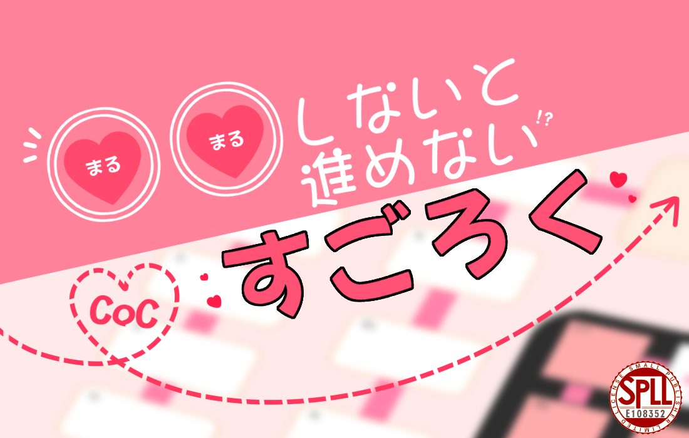
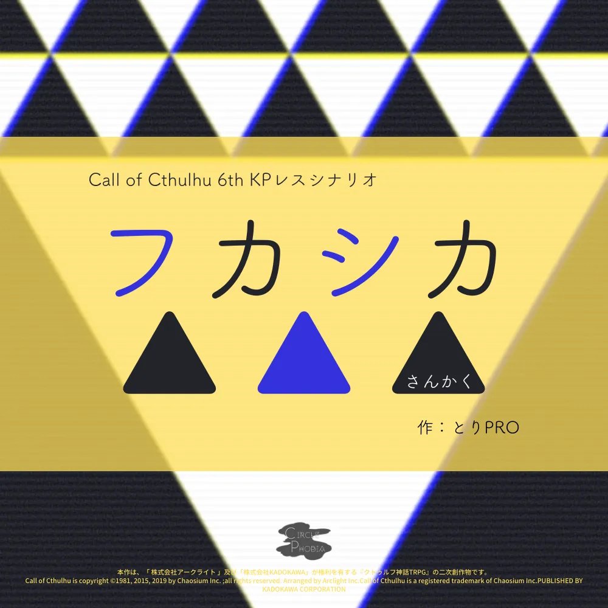
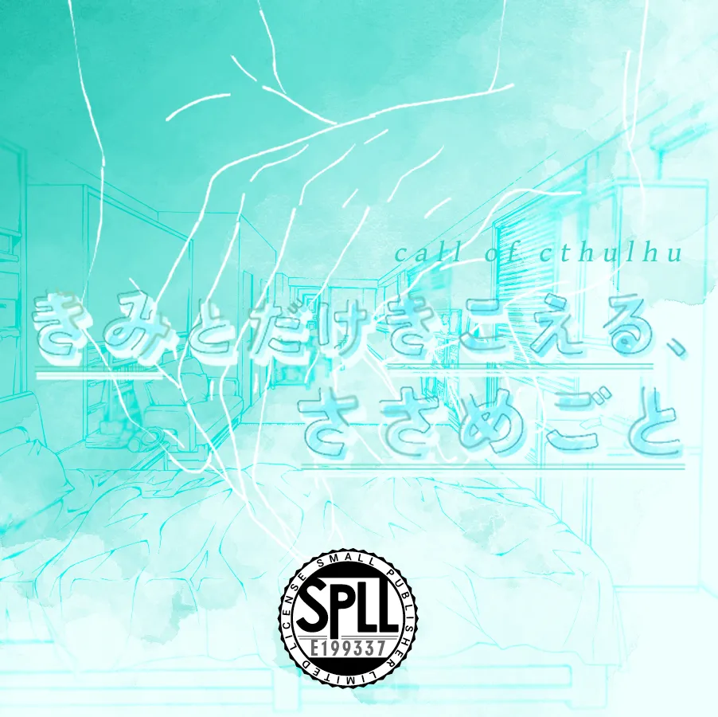
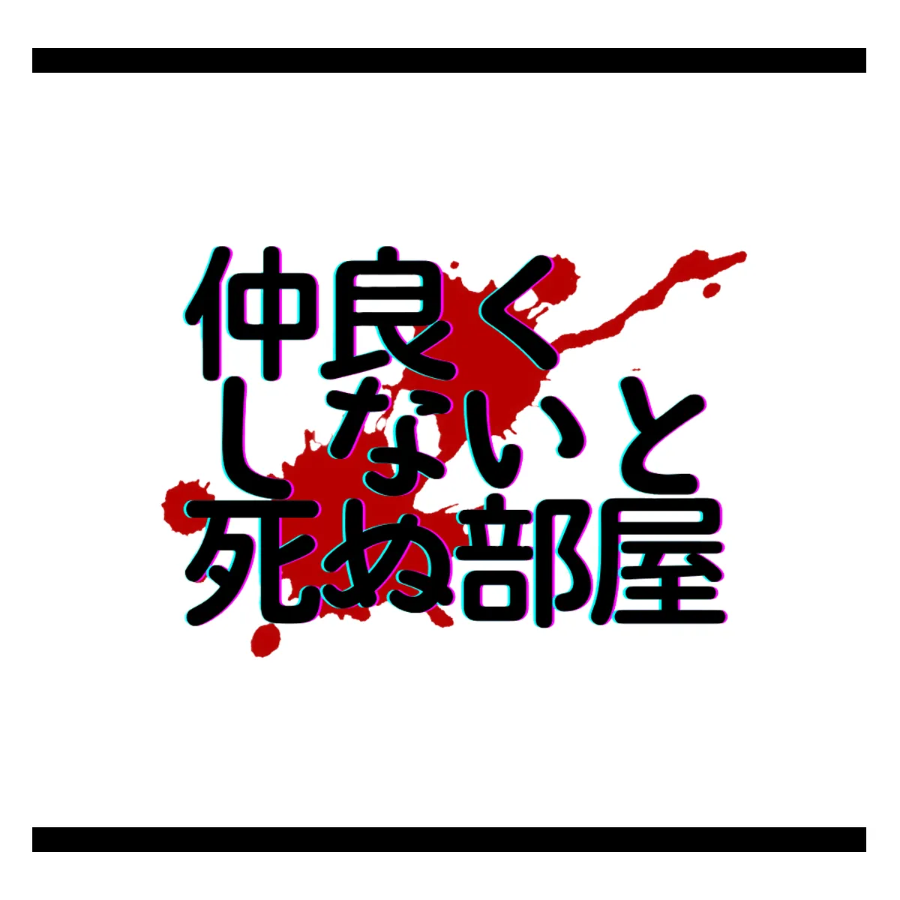

新着一覧
もなかも
てとせ
星夜
めこつ
ぷわちん
テキセ単発

やぶかなすごろく

フカシカあさはるやぶかな Holiday's Midnight
おりゆう 転がるおじさんとジャスミンティー
やぶかな

きみとだけきこえる、ささめごとあさはる わたしたち、入れ替わってる～！？
やぶかな

仲良くしないと死ぬ部屋やぶかな
蟹蟹詐欺
暴走！妄想！ナマモノノート！
媚バレックス
KPレス
単発
- 輾転と町は
- キルキルイキル_かどはな
- ホームシック_ひまわり
- 盲心未遂(いわひらげんみ❌)
- ラブレターフロムロラン
- レッツロシアンうどん (灰よかげんみ❌)
- 捨てKPC (脱獄乙女げんみ❌)
- 慄け！因習村
- ラーメンは乙女の嗜み (脱獄乙女げんみ❌)
- ハイフェッツをなぞる病
- 宇宙船ニル・ノート号の残響
The Back Rooms
死にたがり電車
透明となった君へ
村ホラーRTA
初恋性ストックホルム症候群
鰯と柊_あさはる
鰯と柊_しょじょめめ
灰になってよかった
カタシロ
創作動画